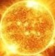
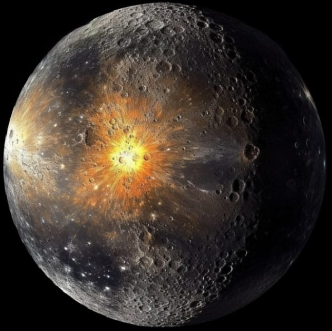
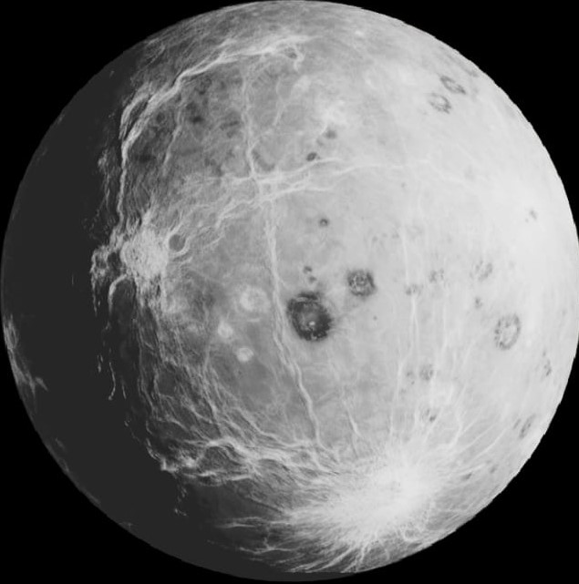
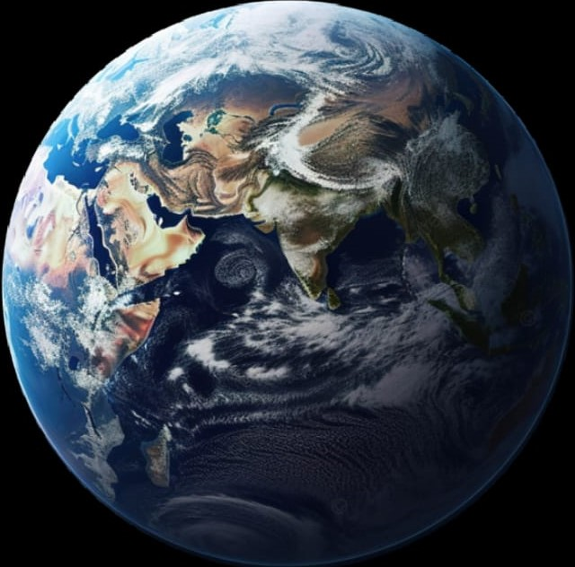
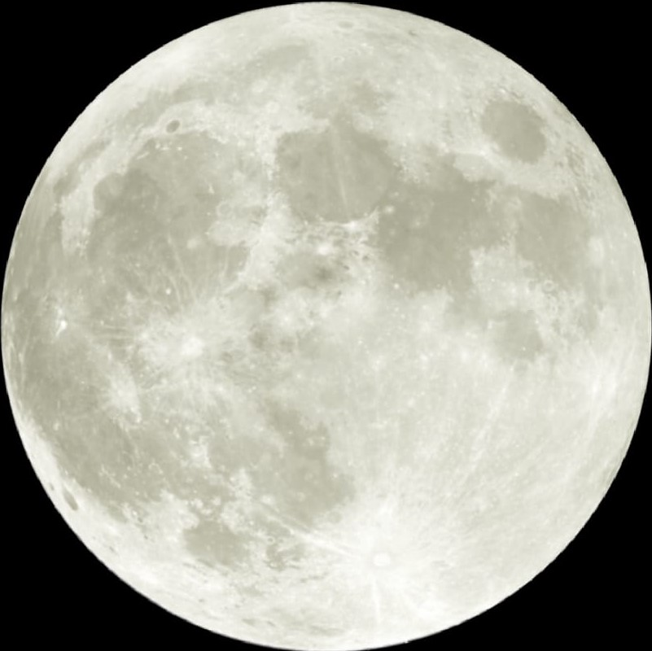
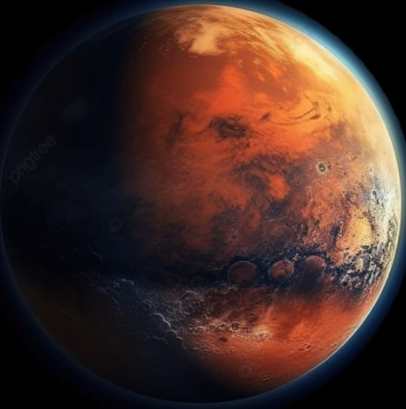
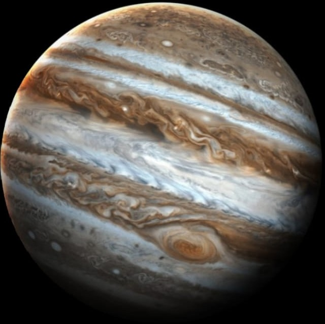
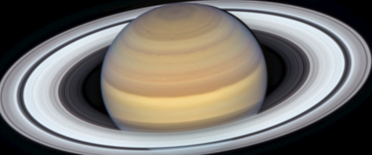
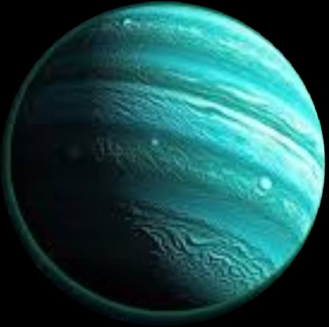
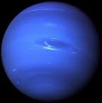

SE.Sondos SO
*The Deep Galaxy*
Galaxy
Mercury
Gray
Moons: None
Visibility: Can be seen with telescopes, especially at dawn or dusk
Viewing Times: January, March, April, May, August
Venus
Bright white
Moons: None
Visibility: Easily visible to the naked eye, known as the morning or evening star
Viewing Times: Throughout the year
Earth
Blue and green
Moons: The Moon
The supermoon phenomenon occurs a few times a year
Mars
Red
Moons: Phobos and Deimos
Visibility: Can be seen with telescopes, best viewed every two years
Viewing Times: October and November
Jupiter
Brown and white with bands
Moons: Over 79 moons, notable ones include Io, Europa, Ganymede, and Callisto
Visibility: Easily seen with telescopes
Viewing Times: June, July, August
Saturn
Golden yellow
Moons: Over 82 moons, notable one is Titan
Visibility: Easily seen with telescopes, especially its beautiful rings
Viewing Times: August, September, October
Uranus
Blue-green
Moons: 27 moons, notable ones include Titania and Oberon
Visibility: Can be seen with powerful telescopes
Viewing Times: October, November
Neptune
Dark blue
Moons: 14 moons, notable one is Triton
Visibility: Can be seen with powerful telescopes
Viewing Times: September, October










*EXPLORE MORE*